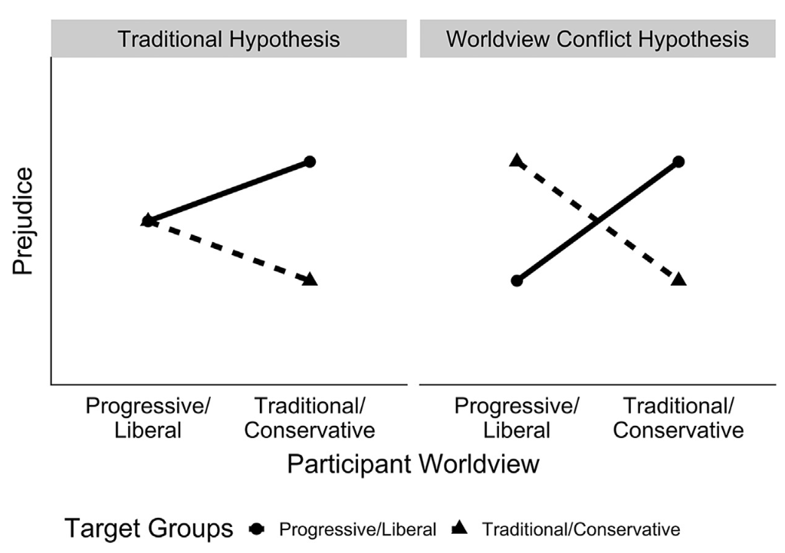

Worldview Conflict
How is ideology related to prejudice?

People express animosity towards people and groups who do not share their beliefs (Brandt & Crawford, 2020). We call this worldview conflict. Although this is commonly seen in the political domain, with people on the left and the right expressing animosity towards the ‘other side’, we find this in a number of other domains. For example, we have studied worldview conflict in religion, finding that both the religious and non-religious express animosity towards groups who violate their moral values. We even find that people who score high on the personality trait openness to experience express animosity towards people who are different from them. Crucially, the targets of this animosity are meaningfully different across groups. Nonetheless, common psychological mechanisms of perceived worldview and value dissimilarity account for group-based animosity across different strata of society.
This work is practically important because it suggests that to overcome the societal dysfunction that comes with polarization, we need to understand how people perceive and cope with value differences. To this end, we’ve worked with Respectful Conversations, an organization that uses in-person trainings to help people confidentially and emphatically discuss controversial issues, to evaluate their program (Brandt & Morey, preprint). We are open to working with other organizations who want to build a more compassionate and socially cohesive society.